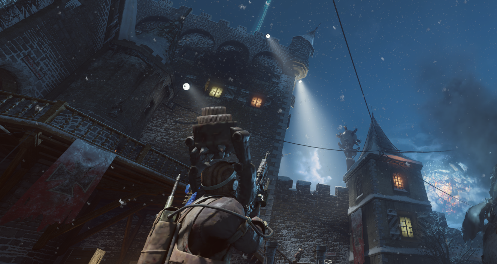
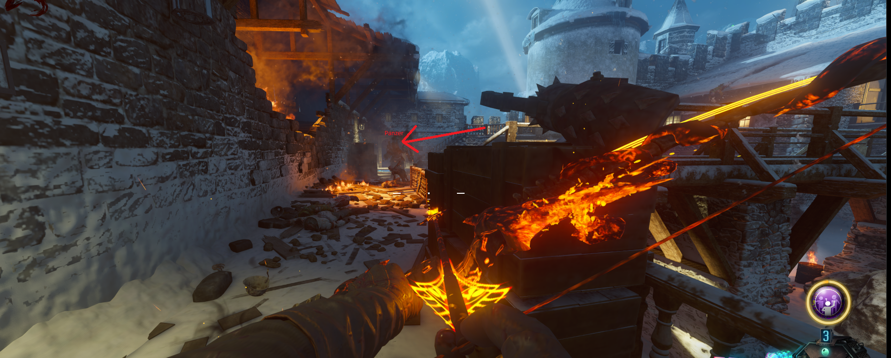
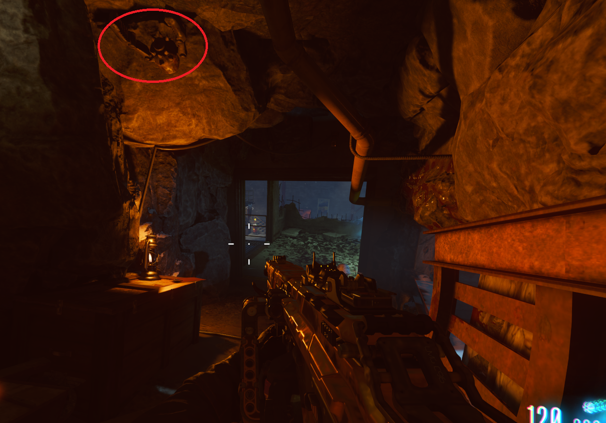
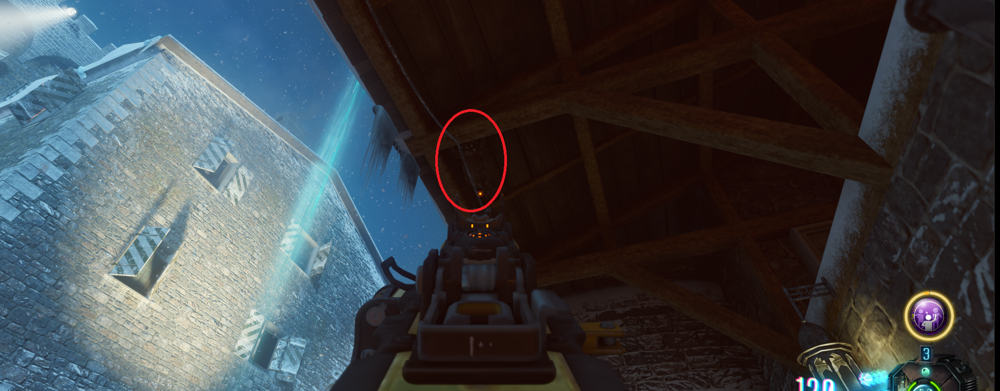
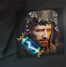
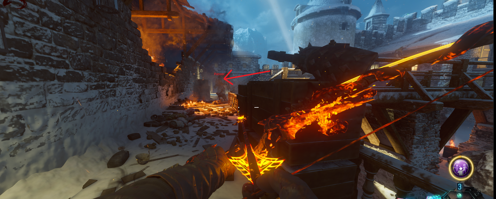
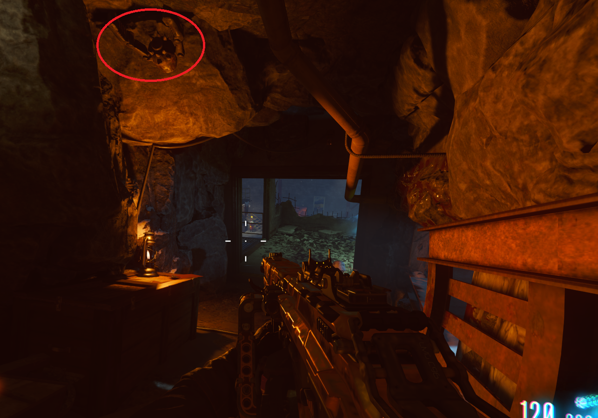
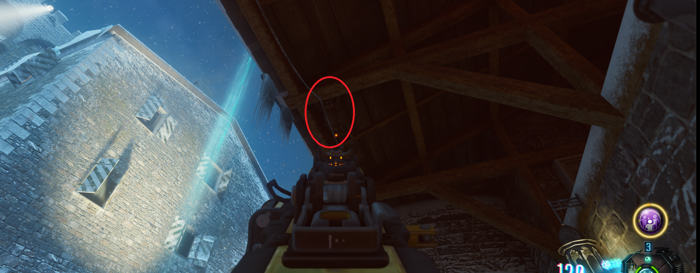
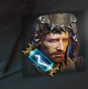

Casco de Panzer secreta (Der Eisendrachen)

Tendremos que buscar los 3 destapacaños en el mapa.
Estos estarán en un techo y al dispararlos caerán. Si les volvemos a disparar, saldrán volando en línea recta. En este puntos tendremos que tener un panzer en esa línea y le hará un instakill.

Localización 1:
En la zona de los caballeros.

Localización 2:
En el pasillo que va desde el Quick Revive hasta el patio.

Localización 3:
En la zona del primer dragón, antes de llegar al puente.

Una vez matemos a 3 panzer con los destapacaños, obtendremos directamente el casco. 
Estos estarán en un techo y al dispararlos caerán. Si les volvemos a disparar, saldrán volando en línea recta. En este puntos tendremos que tener un panzer en esa línea y le hará un instakill.

Localización 1:
En la zona de los caballeros.
Localización 2:
En el pasillo que va desde el Quick Revive hasta el patio.

Localización 3:
En la zona del primer dragón, antes de llegar al puente.

Una vez matemos a 3 panzer con los destapacaños, obtendremos directamente el casco. 